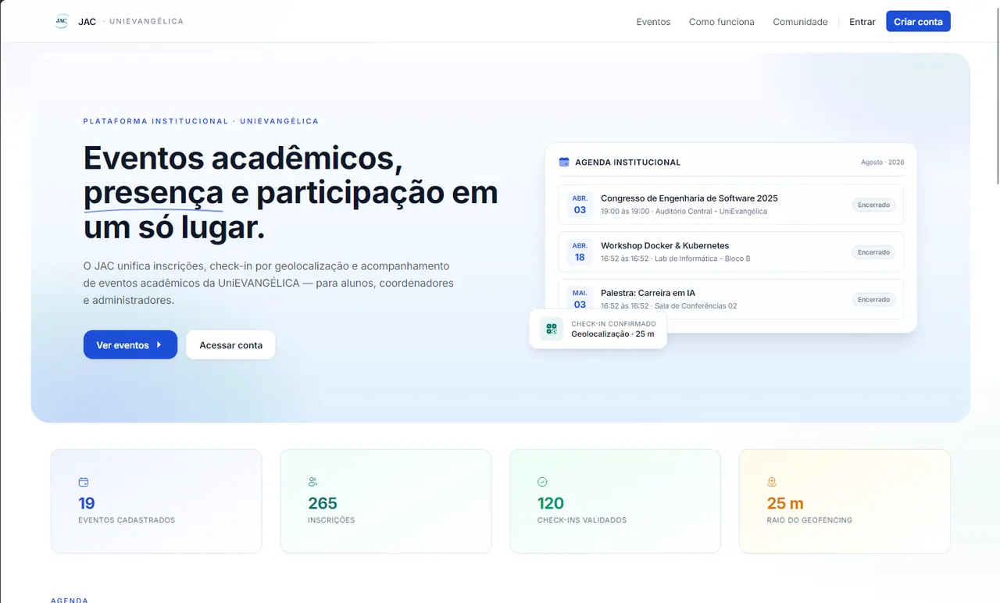
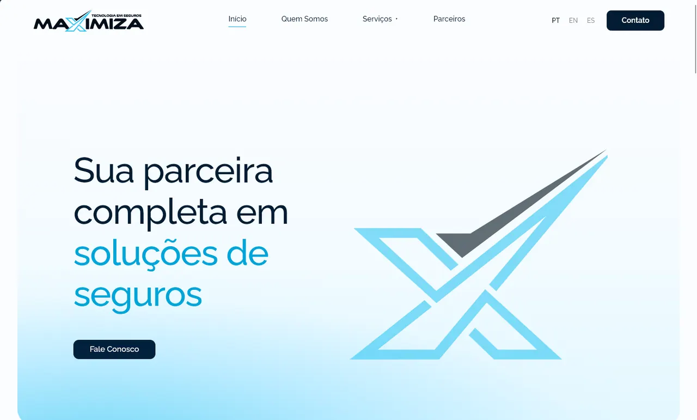
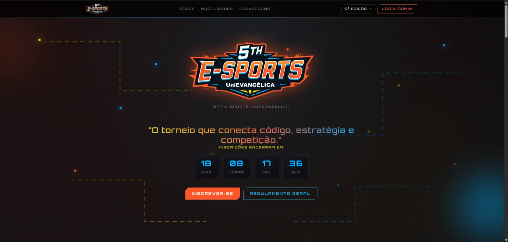

I.
JAC — Jornada Acadêmica e Comunitária
Gestão de eventos acadêmicos com check-in por QR code e geolocalização, e auditoria de segurança documentada.
Ver estudo de casoEngenharia de software · Backend · APIs
Desenvolvo sistemas, APIs e soluções de software com foco em arquitetura, qualidade e impacto real.
Explorar projetos
Gestão de eventos acadêmicos com check-in por QR code e geolocalização, e auditoria de segurança documentada.
Ver estudo de caso
Site institucional de corretora, com formulários de cotação e diretório de parceiros sincronizado diariamente.
Ver estudo de caso
Portal de inscrição por modalidade da 5ª edição, com três falhas de segurança P0 corrigidas.
Ver estudo de casoEngenharia é uma disciplina de precisão.
Precisão · Confiabilidade · Manutenibilidade